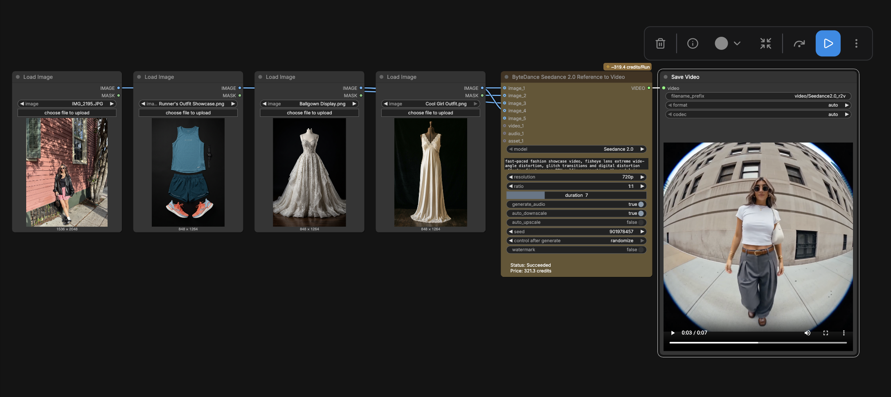

ComfyUI · Seedance · Image-to-Video · Multimodal Evaluation

An applied research framework built in ComfyUI to evaluate the controllability, reliability, and multimodal reasoning behavior of state-of-the-art image-to-video generation models. The central question driving the research: when a model is provided with both visual references and textual instructions that conflict, which input does it actually prioritize?
This question has direct production implications. AI content pipelines depend on predictable model behavior. If a model ignores reference images in favor of prompt semantics, workflows built around reference conditioning will produce unreliable results at scale. Understanding the hierarchy of inputs is a precondition for designing pipelines that work.
Experimental Design
The framework used controlled experiments with systematically varied inputs: real-person photographs, outfit references, style references, and deliberately conflicting prompt instructions. Each experiment isolated a single variable (identity, appearance, prompt semantics, conditioning strength) while holding others constant, enabling clean comparison of how the model weighted competing inputs.
Experiments covered real-person animation and motion generation, outfit and wardrobe transformations, character identity preservation across motion, reference image adherence under strong prompt pressure, prompt-following behavior when contradicting visual input, multi-image conditioning strategies, and camera movement and scene transitions. Automated ComfyUI pipelines generated and catalogued hundreds of outputs across these scenarios, making systematic side-by-side comparison tractable at scale.
Key Finding: Prompt Primacy
Seedance consistently prioritized textual instructions over visual reference inputs when the two conflicted. Across experiments, the model followed prompt semantic intent even when those instructions directly contradicted the provided image references, substituting described attributes for reference-defined ones rather than preserving the source material.
This is not a failure mode in the general case. Prompt primacy produces strong creative flexibility and accurate instruction-following for open-ended generation tasks. It becomes a problem specifically in production contexts requiring strict identity preservation, wardrobe fidelity, or appearance consistency, where the reference image is the ground truth and the prompt is supplemental guidance.
A secondary finding: adding more reference images did not reliably strengthen conditioning. The relationship between image count and output fidelity was non-linear and dependent on prompt structure. Workflow design, conditioning strategy, and how competing inputs were framed within the prompt had a larger effect on reference adherence than the number of reference images provided.
Production Implications
The research established a reusable benchmarking framework for evaluating image-to-video models against production requirements before committing them to a pipeline. The findings directly informed workflow recommendations for teams building AI-native content systems: identifying which generation tasks Seedance handles reliably without additional controls, and which tasks require fine-tuning, LoRA conditioning, or prompt engineering constraints to achieve production-quality output.
The core contribution is methodological: a repeatable evaluation protocol that surfaces model behavior under realistic production conditions rather than benchmark-optimized prompts, giving teams a more accurate picture of what a model will actually do in a deployed workflow.